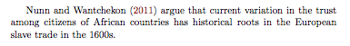
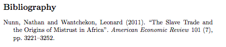

\documentclass{article}
\begin{document}
Hello World
\end{document}5 LaTeX and Markdown
Where are we? Where are we headed?
Up till now, you should have covered:
- Statistical Programming in
R
This is only the beginning of R – programming is like learning a language, so learn more as we use it. And yet R is of likely not the only programming language you will want to use. While we cannot introduce everything, we’ll pick out a few that we think are particularly helpful.
Here will cover
- Markdown
- LaTeX (and BibTeX)
as examples of a non-WYSIWYG editor
command-line are a basic set of tools that you may have to use from time to time. It also clarifies what more complicated programs are doing. Markdown is an example of compiling a plain text file. LaTeX is a typesetting program and git is a version control program – both are useful for non-quantitative work as well.
Please familiarize yourself closing with Markdown, and be sure you know how to open an .Rmd file as described below. In class, we will walk through an Rmd file together. LaTeX is included here for your future reference as this is a popular typesetting program among political scientists. This is not needed for Math Camp and is never required for any course. In fact, many prefer R Markdown’s integration rather than a separate typesetting program. This depends on your background and interests but exposure to the range of popular programs and techniques will be helpful moving forward.
Check your understanding
Check if you have an idea of how you might code the following tasks:
- What does “WYSIWYG” stand for? How would a non-WYSIWYG format text?
- How do you start a header in markdown?
- What are some “plain text” editors?
- How do you start a document in
.tex? - How do you start a environment in
.tex? - How do you insert a figure in
.tex? - How do you reference a figure in
.tex? - What is a
.bibfile? - Say you came across a interesting journal article. How would you want to maintain this reference so that you can refer to its citation in all your subsequent papers?
5.1 Motivation
Statistical programming is a fast-moving field. The beta version of R was released in 2000, ggplot2 was released on 2005, and RStudio started around 2010. Of course, some programming technologies are quite “old”: (C in 1969, C++ around 1989, TeX in 1978, Linux in 1991, Mac OS in 1984). But it is easy to feel you are falling behind in the recent developments of programming. Today we will do a brief and rough overview of some fundamental and new tools other than R, with the general aim of having you break out of your comfort zone so you won’t be shut out from learning these tools in the future.
5.2 Markdown
At its core markdown is just plain text. Plain text does not have any formatting embedded in it. Instead, the formatting is coded up as text. Markdown is not a WYSIWYG (What you see is what you get) text editor like Microsoft Word or Google Docs. This will mean that you need to explicitly code for bold{text} rather than hitting Command+B and making your text look bold on your own computer.
Markdown is known as a “light-weight” editor, which means that it is relatively easy to write code that will compile. It is quick and easy and satisfies most presentation purposes; you might want to try LaTeX for more involved papers.
5.2.1 markdown commands
For italic and bold, use either the asterisks or the underlines,
*italic* **bold**
_italic_ __bold__And for headers use the hash symbols,
# Main Header
## Sub-headers5.2.2 your own markdown
RStudio makes it easy to compile your very first markdown file by giving you templates. Got to New > R Markdown, pick a document and click Ok. This will give you a skeleton of a document you can compile – or “knit”.
Rmd is actually a slight modification of real markdown. It is a type of file that R reads and turns into a proper md file. Then, it uses a document-conversion called pandoc to compile your md into documents like PDF or HTML.

5.2.3 A note on plain-text editors
Multiple software exist where you can edit plain-text (roughly speaking, text that is not WYSIWYG).
- RStudio (especially for R-related links)
- TeXMaker, TeXShop (especially for TeX)
- emacs, aquamacs (general)
- vim (general)
- VS Code (general)
- Sublime Text (general)
- Atom (general)
Each has their own keyboard shortcuts and special features. You can browse a couple and see which one(s) you like.
5.3 LaTeX
LaTeX is a typesetting program. You’d engage with LaTeX much like you engage with your R code. You will interact with LaTeX in a text editor, and will writing code which will be interpreted by the LaTeX compiler and which will finally be parsed to form your final PDF.
5.3.1 compile online
- Go to https://www.overleaf.com
- Scroll down and go to “CREATE A NEW PAPER” if you don’t have an account.
- Let’s discuss the default template.
- Make a new document, and set it as your main document. Then type in the Minimal Working Example (MWE):
5.3.2 compile your first LaTeX document locally
LaTeX is a very stable system, and few changes to it have been made since the 1990s. The main benefit: better control over how your papers will look; better methods for writing equations or making tables; overall pleasing aesthetic.
- Open a plain text editor. Then type in the MWE
\documentclass{article}
\begin{document}
Hello World
\end{document}- Save this as
hello_world.tex. Make sure you get the file extension right. - Open this in your “LaTeX” editor. This can be
TeXMaker,Aqumacs, etc.. - Go through the click/dropdown interface and click compile.
5.3.3 main LaTeX commands
LaTeX can cover most of your typesetting needs, to clean equations and intricate diagrams.
Some main commands you’ll be using are below, and a very concise cheat sheet here: https://wch.github.io/latexsheet/latexsheet.pdf
Most involved features require that you begin a specific “environment” for that feature, clearly demarcating them by the notation \begin{figure} and then \end{figure}, e.g. in the case of figures.
\begin{figure}
\includegraphics{histogram.pdf}
\end{figure}where histogram.pdf is a path to one of your files.
Notice that each line starts with a backslash \ – in LaTeX this is the symbol to run a command.
The following syntax at the endpoints are shorthand for math equations.
\[\int x^2 dx\]these compile math symbols: \displaystyle \int x^2 dx.1
The align environment is useful to align your multi-line math, for example.
\begin{align}
P(A \mid B) &= \frac{P(A \cap B)}{P(B)}\\
&= \frac{P(B \mid A)P(A)}{P(B)}
\end{align}\begin{align} P(A \mid B) &= \frac{P(A \cap B)}{P(B)}\\ &= \frac{P(B \mid A)P(A)}{P(B)} \end{align}
Regression tables should be outputted as .tex files with packages like xtable and stargazer, and then called into LaTeX by \input{regression_table.tex} where regression_table.tex is the path to your regression output.
Figures and equations should be labelled with the tag (e.g. label{tab:regression} so that you can refer to them later with their tag Table \ref{tab:regression}, instead of hard-coding Table 2).
For some LaTeX commands you might need to load a separate package that someone else has written. Do this in your preamble (i.e. before \begin{document}):
\usepackage[options]{package}where package is the name of the package and options are options specific to the package.
Further Guides
For a more comprehensive listing of LaTeX commands, Mayya Komisarchik has a great tutorial set of folders: https://scholar.harvard.edu/mkomisarchik/tutorials-0
There is a version of LaTeX called Beamer, which is a popular way of making a slideshow. Slides in markdown is also a competitor. The language of Beamer is the same as LaTeX but has some special functions for slides.
5.4 BibTeX
BibTeX is a reference system for bibliographical tests. We have a .bib file separately on our computer. This is also a plain text file, but it encodes bibliographical resources with special syntax so that a program can rearrange parts accordingly for different citation systems.
5.4.1 what is a .bib file?
For example, here is the Nunn and Wantchekon article entry in .bib form.
@article{nunn2011slave,
title={The Slave Trade and the Origins of Mistrust in Africa},
author={Nunn, Nathan and Wantchekon, Leonard},
journal={American Economic Review},
volume={101},
number={7},
pages={3221--3252},
year={2011}
}The first entry, nunn2011slave, is “pick your favorite” – pick your own name for your reference system. The other slots in this @article entry are entries that refer to specific bibliographical text.
5.4.2 what does LaTeX do with .bib files?
Now, in LaTeX, if you type
\textcite{nunn2011slave} argue that current variation in the trust among citizens of African countries has historical roots in the European slave trade in the 1600s.
as part of your text, then when the .tex file is compiled the PDF shows something like

in whatever citation style (APSA, APA, Chicago) you pre-specified!
Also at the end of your paper you will have a bibliography with entries ordered and formatted in the appropriate citation.

This is a much less frustrating way of keeping track of your references – no need to hand-edit formatting the bibliography to conform to citation rules (which biblatex already knows) and no need to update your bibliography as you add and drop references (biblatex will only show entries that are used in the main text).
5.4.3 stocking up on your .bib files
You should keep your own .bib file that has all your bibliographical resources. Storing entries is cheap (does not take much memory), so it is fine to keep all your references in one place (but you’ll want to make a new one for collaborative projects where multiple people will compile a .tex file).
For example, Gary’s BibTeX file is here: https://github.com/iqss-research/gkbibtex/blob/master/gk.bib
Citation management software (Mendeley or Zotero) automatically generates .bib entries from your library of PDFs for you, provided you have the bibliography attributes right.
Extension: Optional Exercise
Create a LaTeX document for a hypothetical research paper on your laptop and, once you’ve verified it compiles into a PDF, come show it to either one of the instructors.
You can also use overleaf if you have preference for a cloud-based system. But don’t swallow the built-in templates without understanding or testing them.
Each student will have slightly different substantive interests, so we won’t impose much of a standard. But at a minimum, the LaTeX document should have:
- A title, author, date, and abstract
- Sections
- Italics and boldface
- A figure with a caption and in-text reference to it.
Depending on your subfield or interests, try to implement some of the following:
- A bibliographical reference drawing from a separate
.bibfile - A table
- A math expression
- A different font
- Different page margins
- Different line spacing
Enclosing with
$$instead of\[also has the same effect, so you may see it too. But this is now discouraged due to its inflexibility.↩︎